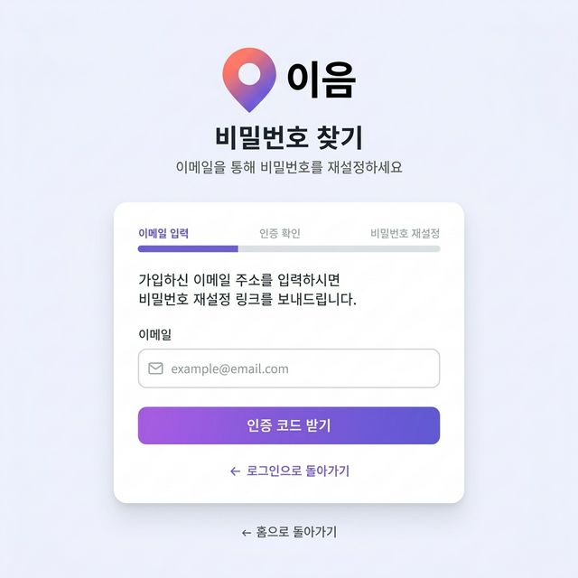

1
2
3
4
5
6
7
Description
Summary.
- 사용자가 계정 비밀번호를 분실했을 때, 가입한 이메일을 인증하여 재설정을 도와주는 프로세스 첫 화면
- 기존 `화면설계서_예시 샘플.html`의 레이아웃 형식을 그대로 차용하여 일관성을 유지
| 1 |
헤더 및 타이틀 · 서비스 로고 · "비밀번호 찾기" 타이틀 · 서브 카피 문구 ("이메일을 통해 비밀번호를 재설정하세요") 표시 |
| 2 |
프로세스 인디케이터 (Step Bar) · '이메일 입력' > '인증 확인' > '비밀번호 재설정' 3단계 표시 · 현재 진행 중인 '이메일 입력' 구간에 활성화 색상(파란색) 하이라이팅 |
| 3 |
사용자 안내 문구 · 가입하신 이메일 주소를 입력하시면 비밀번호 재설정 링크(혹은 인증 번호)를 보내드린다는 안내 표출 |
| 4 |
이메일 입력 필드 · 가입 시 사용했던 이메일을 입력하는 단일 필드 · Placeholder: (편지봉투 아이콘) example@email.com · 실시간 정규식 유효성 검사 진행 |
| 5 |
[인증 코드 받기] 버튼 · 이메일 입력 필드에 올바른 형식이 입력되면 활성화 · 클릭 시 API를 호출하여 이메일 발송 요청 후 '인증 확인(Step 2)' 화면으로 이동 처리 |
| 6 |
로그인으로 돌아가기 링크 · 우연히 진입했거나 다른 계정을 기억해낸 사용자를 위한 이탈 방지 동선 · 클릭 시 로그인 메인 화면으로 리다이렉트 |
| 7 |
홈으로 돌아가기 링크 · 전체 워크플로우를 포기하고 서비스 초기 진입점(메인 랜딩페이지)으로 복귀하는 기능 제공 |
Check Point
· 존재하지 않는 이메일 주소 입력 시 전송 이전에 실패 메시지 표출 (보안 정책에 따라 "이메일이 전송되었습니다"로 통일할지 여부 결정 필요)
· 인증 코드 전송 버튼을 누른 후 재요청 어뷰징 방지를 위해 최소 "3분 카운트다운" 등 버튼 비활성화 쿨타임 제어 필요
· 버튼에 시각적인 로딩 스피너 작동으로 진행 상태 피드백 제공